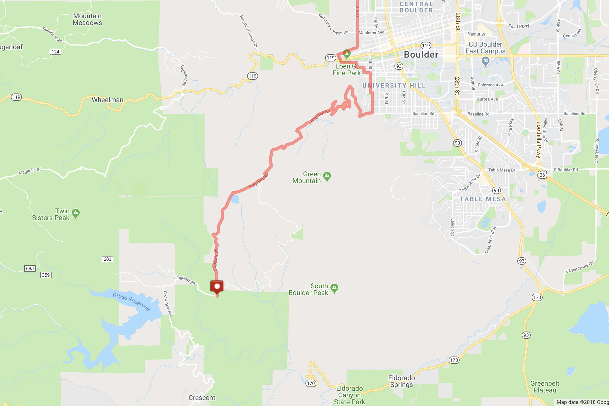

Chris Postma
Last updated Dec 19, 2018
-
Super Flagstaff
A Boulder classic that starts right from downtown. The ride actually begins at the base of Gregory Canyon and the best way to get there from downtown Boulder is via 6th Street to Baseline. The ride is divided into two segments, depending on how much time you have, either to the Amphitheater or to the mailboxes at the top. The views are incredible from the outset and only get better, especially if you try this ride after dark. You're likely to run into professional cyclists here too.

-
Brainard Lake
A gradual climb to 10,200 ft with a spectacular payoff at the end in the form of panoramic views of the mountains surrounding Brainard lake. This route comprises a number of smaller, linked routes which are all equally amazing - Olde Stage, Left Hand Canyon, and the climb up to Ward. You can even hit Lee Hill on the way back or take the peak to peak highway to find a different return route. All in all, a great way to get over 5,000 ft of climbing done in about 25 miles.
-
Sunshine Canyon to Switzerland Trail
This is a beautiful ride up into Sunshine Canyon, with the road changing from paved to dirt to an old, abandoned narrow gauge railroad track. I enjoy this ride the most in the evening because the sunsets are incredible to see from Bald Mountain. The roads typically have very few vehicles on them, making for a relaxing ride.